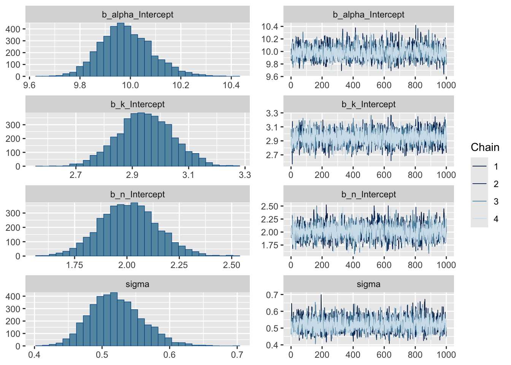

The first dollar spent in a marketing effort is always the highest ROI and it diminishes it’s retrun from there and gets worse depending on the channel and season. This shape is beautifully made by the Hill Function.
1. The Hill Function (Generative Form)
A typical Hill function:
\[
y = \alpha \cdot \frac{x^n}{k^n + x^n}
\]
α — Maximum height (how tall the curve gets)
k — Midpoint (where it bends)
n — Hill coefficient (curvature / steepness)
Inside an MMM, the Hill function becomes the functional form for the “response curve” for each marketing channel. It looks something like this:
Loading 'brms' package (version 2.22.0). Useful instructions
can be found by typing help('brms'). A more detailed introduction
to the package is available through vignette('brms_overview').
Attaching package: 'brms'
The following object is masked from 'package:stats':
ar
hill_model <-brm(bf( y ~ alpha * x^n / (k^n + x^n), ##hill function alpha + k + n ~1, ##model params the ~ `1 is “Model each nonlinear parameter as its own intercept (no varying effects).”nl =TRUE#switches brms into nonlinear model ),data = df,family =gaussian(),prior =c(prior(normal(80, 3), nlpar ="alpha"), #max saturation levelprior(normal(3, 2), nlpar ="k"), #half-max point - controls where the curve reaches 50% of aprior(normal(2, 1), nlpar ="n") # hill coefficient (steepness) ),iter =2000,chains =4,cores =4)
Compiling Stan program...
Trying to compile a simple C file
Running /Library/Frameworks/R.framework/Resources/bin/R CMD SHLIB foo.c
using C compiler: ‘Apple clang version 17.0.0 (clang-1700.0.13.5)’
using SDK: ‘MacOSX15.5.sdk’
clang -arch arm64 -I"/Library/Frameworks/R.framework/Resources/include" -DNDEBUG -I"/Library/Frameworks/R.framework/Versions/4.4-arm64/Resources/library/Rcpp/include/" -I"/Library/Frameworks/R.framework/Versions/4.4-arm64/Resources/library/RcppEigen/include/" -I"/Library/Frameworks/R.framework/Versions/4.4-arm64/Resources/library/RcppEigen/include/unsupported" -I"/Library/Frameworks/R.framework/Versions/4.4-arm64/Resources/library/BH/include" -I"/Library/Frameworks/R.framework/Versions/4.4-arm64/Resources/library/StanHeaders/include/src/" -I"/Library/Frameworks/R.framework/Versions/4.4-arm64/Resources/library/StanHeaders/include/" -I"/Library/Frameworks/R.framework/Versions/4.4-arm64/Resources/library/RcppParallel/include/" -I"/Library/Frameworks/R.framework/Versions/4.4-arm64/Resources/library/rstan/include" -DEIGEN_NO_DEBUG -DBOOST_DISABLE_ASSERTS -DBOOST_PENDING_INTEGER_LOG2_HPP -DSTAN_THREADS -DUSE_STANC3 -DSTRICT_R_HEADERS -DBOOST_PHOENIX_NO_VARIADIC_EXPRESSION -D_HAS_AUTO_PTR_ETC=0 -include '/Library/Frameworks/R.framework/Versions/4.4-arm64/Resources/library/StanHeaders/include/stan/math/prim/fun/Eigen.hpp' -D_REENTRANT -DRCPP_PARALLEL_USE_TBB=1 -I/opt/R/arm64/include -fPIC -falign-functions=64 -Wall -g -O2 -c foo.c -o foo.o
In file included from <built-in>:1:
In file included from /Library/Frameworks/R.framework/Versions/4.4-arm64/Resources/library/StanHeaders/include/stan/math/prim/fun/Eigen.hpp:22:
In file included from /Library/Frameworks/R.framework/Versions/4.4-arm64/Resources/library/RcppEigen/include/Eigen/Dense:1:
In file included from /Library/Frameworks/R.framework/Versions/4.4-arm64/Resources/library/RcppEigen/include/Eigen/Core:19:
/Library/Frameworks/R.framework/Versions/4.4-arm64/Resources/library/RcppEigen/include/Eigen/src/Core/util/Macros.h:679:10: fatal error: 'cmath' file not found
679 | #include <cmath>
| ^~~~~~~
1 error generated.
make: *** [foo.o] Error 1
Start sampling
Under the hood the brms translates the formula to stan which looks like:
mu = alpha * pow(x, n) / (pow(k, n) + pow(x, n));
y ~ normal(mu, sigma);
alpha ~ normal(10, 3);
k ~ normal(3, 2);
n ~ normal(1, 1);
4. Review Posterior Summaries
print(hill_model, digits =2)
Family: gaussian
Links: mu = identity; sigma = identity
Formula: y ~ alpha * x^n/(k^n + x^n)
alpha ~ 1
k ~ 1
n ~ 1
Data: df (Number of observations: 100)
Draws: 4 chains, each with iter = 2000; warmup = 1000; thin = 1;
total post-warmup draws = 4000
Regression Coefficients:
Estimate Est.Error l-95% CI u-95% CI Rhat Bulk_ESS Tail_ESS
alpha_Intercept 9.98 0.10 9.80 10.20 1.00 2295 2345
k_Intercept 2.95 0.10 2.76 3.14 1.00 3127 2228
n_Intercept 2.01 0.14 1.74 2.28 1.00 2443 2234
Further Distributional Parameters:
Estimate Est.Error l-95% CI u-95% CI Rhat Bulk_ESS Tail_ESS
sigma 0.52 0.04 0.45 0.60 1.00 3607 2817
Draws were sampled using sampling(NUTS). For each parameter, Bulk_ESS
and Tail_ESS are effective sample size measures, and Rhat is the potential
scale reduction factor on split chains (at convergence, Rhat = 1).
plot(hill_model)

posterior <-as.data.frame(hill_model)
You should see α, k, and n close to the true values 10, 3, and 1.
5. Posterior Predictive Curve
This mirrors McElreath’s “link” method in Statistical Rethinking: